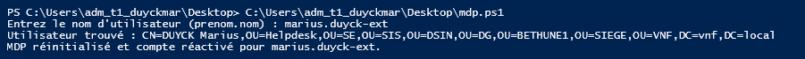

Contexte
Objectif de la mission
Dans le cadre du support N1 chez VNF, certaines tâches d'administration répétitives — comme la création de comptes utilisateurs ou la réinitialisation de mots de passe — sont réalisées plusieurs fois par semaine. L'objectif est d'automatiser ces opérations via des scripts PowerShell interactifs pour gagner en rapidité, réduire les erreurs de saisie manuelle et standardiser les procédures.
Les scripts sont développés et testés sur Windows PowerShell ISE puis déployés sur les postes des techniciens du Helpdesk VNF.
Script de création d'utilisateurs réalisé lors du projet de fin d'année de mon BTS
🎯 Compétences E4 mobilisées
Cas d'usage identifiés
Les scripts développés répondent à des besoins concrets du quotidien du Helpdesk VNF, liés à la gestion des comptes dans l'Active Directory.
Procédure de création et déploiement
Identification et analyse du besoin
Avant d'écrire une seule ligne de code, il est essentiel d'analyser précisément le besoin pour définir ce que le script doit faire, quelles données il doit demander à l'utilisateur et quelles actions il doit effectuer dans l'AD.
Développement via PowerShell ISE
Le développement se fait dans Windows PowerShell ISE (Integrated Scripting Environment), qui offre une coloration syntaxique, une console d'exécution intégrée et un débogueur pour faciliter la mise au point.
Read-Host. Le technicien n'a pas à modifier le script pour chaque utilisation.Try / Catch pour intercepter les erreurs (compte inexistant, droits insuffisants, mot de passe non conforme) et afficher un message explicite au technicien.Test et validation du script
Avant tout déploiement, chaque script est rigoureusement testé dans un environnement de test ou sur un compte de test dédié. L'objectif est de vérifier que toutes les branches du code fonctionnent, y compris les cas d'erreur.

Déploiement et utilisation au quotidien
Une fois validé, le script est mis à disposition de l'équipe et intégré dans les procédures de traitement des tickets. Son utilisation devient la méthode de référence pour les tâches ciblées.
.ps1 est déposé dans un dossier partagé accessible à tous les techniciens du Helpdesk VNF. Un raccourci est créé sur les bureaux des postes concernés pour un accès rapide.RemoteSigned ou Unrestricted sur le poste pour autoriser l'exécution de scripts locaux.